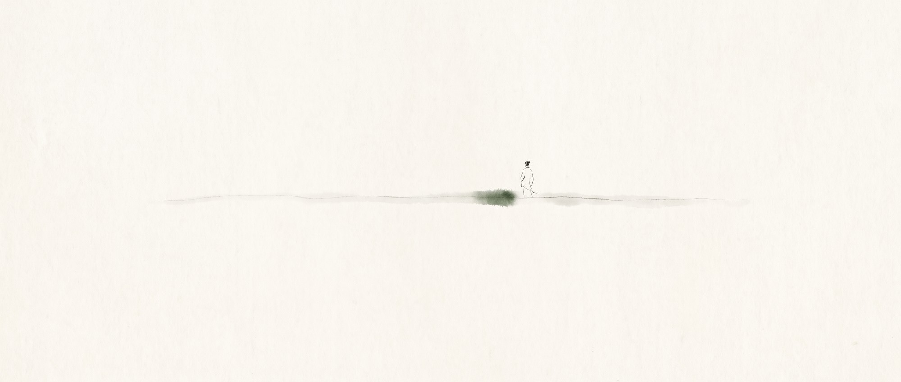
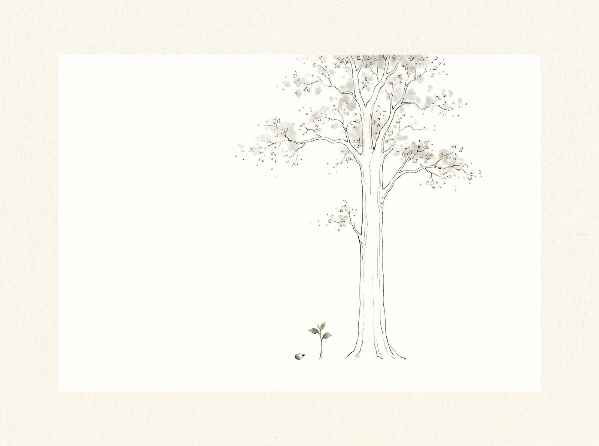
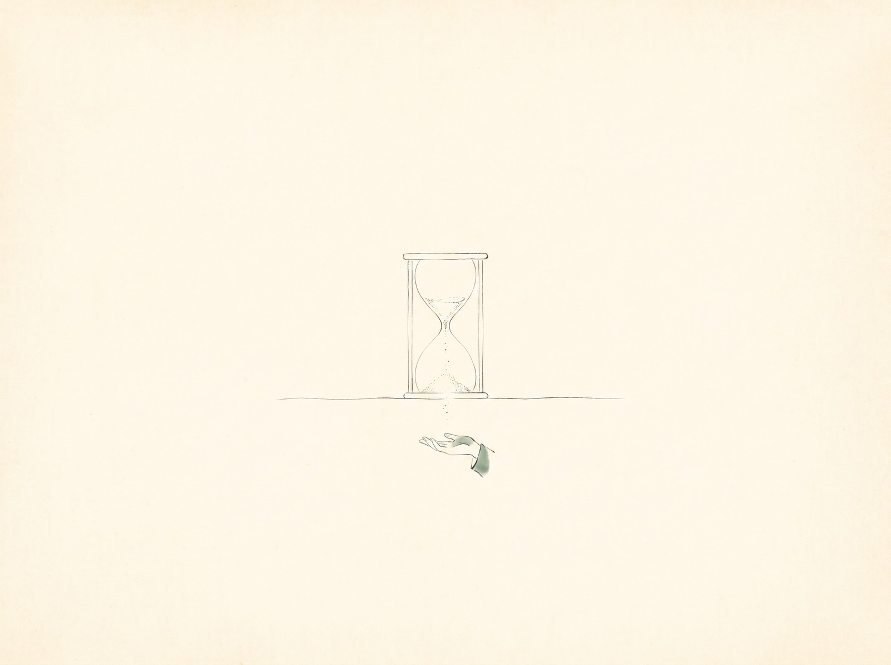
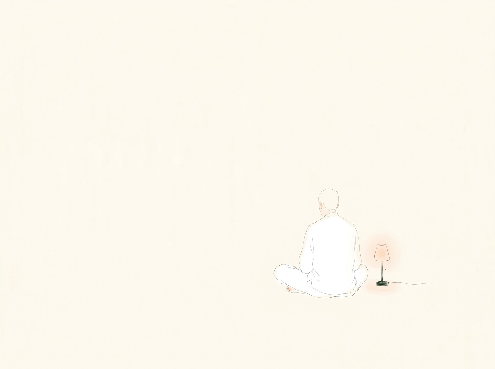

其实这个题目不言而喻。
设想我们有无限的生命：细胞不会衰老，认知不会下降，人也不会死。时间用不完，任何事都可以去做——那我们就可以花一百年、一万年，看一根草从种子里冒出来，再花十万年，看它长成一棵参天大树。
我们也不必去学 AI 技能、不必去学视频剪辑。不用着急去做工作，不用急着早上吃完饭、九点赶到公司打卡，打完卡下班再赶着练健身。读书、睡觉——所有这一切，我们都不必赶着做，因为我们没有了死亡焦虑。
我们只是活着、存在着。没有一件事需要我们着急，因为生命是无限的。
可真的去体会这种感觉，只会觉得无聊。好像任何一件事都没有意义了。

时间一旦无限，世界就被摊平：没有轻重缓急，什么都可以等到想做的时候再做。所有事情都有无限的可能，一件事只要发生，就必然有结果。
哪怕我是世界上最笨、最蠢、最不会画画的人，我也总有无限的时间成为大师；哪怕我是世界上最无知、最文盲、最没有教养的人，我也能从野蛮人变成无所不知的大学者。一切知识、一切技能，都失去了意义——因为我们不会死。
但正因为我们会死，我们才需要在有限的时间里，挑出对生命重要的事，一件一件做完。
比如现在这一段人生里，也许恢复身体和家人陪伴是最重要的，工作只是附加品；前一段人生里，满足欲望也许是最重要的，亲情友情反倒成了附加品。
此刻最重要的，也许就是把这段话说完、把这段文字记下来——因为时间是我唯一拥有的货币，我只能把它花在这里。

也正因如此，我们想建立一种高效的生活方式，想把尽可能多的事，在最短的时间里做成。
可所谓的高效，只是一种感觉。很多时候你以为自己做了很多事，其实大多数事都是不必要的。结果和意义，是在安静里自己涌现出来的：安静地做一件正确的事，有当下的体会，那一刻的效率，是所谓项目管理的十亿倍。
然而为了减轻对死亡的焦虑，我们告诉自己：我在有限的时间里完成了很多事情——用这个来逃避当下。
「在想高效的时候，恰恰背离了当下，也失去了效率的意义。」

我们要做的不是逃避这种焦虑，而是利用它，帮我们更好地创造。